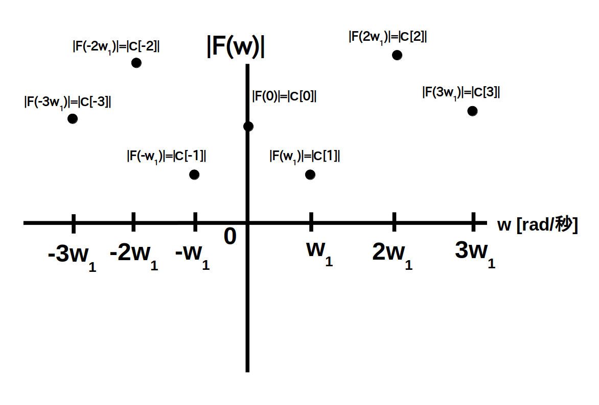
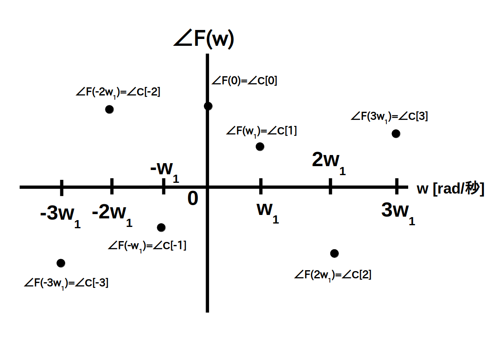

ここでは前ページで定義した周期性時間領域アナログ信号のスペクトルをグラフ化して、視覚的にスペクトルを理解してみたいと思います。
なお今回はグラフの横軸を角周波数 $w$ [rad/秒] としていますが、横軸を周波数 $f$ [Hz] にしたり波長 [m] にする場合も実際には多いです。
まず始めに周期性時間領域アナログ信号の振幅スペクトル $|\textrm{F}(w)|$ の例を図 1 に示します。
前ページで説明したように振幅スペクトル $|\textrm{F}(w)|$ は $w = k\cdot w_1$ [rad/秒] の所にだけ値がある周波数領域ディジタル信号になります。

次に周期性時間領域アナログ信号の位相スペクトル $\angle\textrm{F}(w)$ の例を図2に示します。
やはり$\angle\textrm{F}(w)$ も $w = k\cdot w_1$ [rad/秒] の所にだけ値がある周波数領域ディジタル信号になります。

ところで複素フーリエ係数 $\textrm{C}[k]$ は共役関係にありましたので、$|\textrm{C}_k|$ は左右で対象形、 $\angle \ \textrm{C}_k$ は原点で点対称形になります。
従って通常は $ w \geq 0$ [rad/秒] 以上の領域だけをスペクトル図に示すことが多いです。